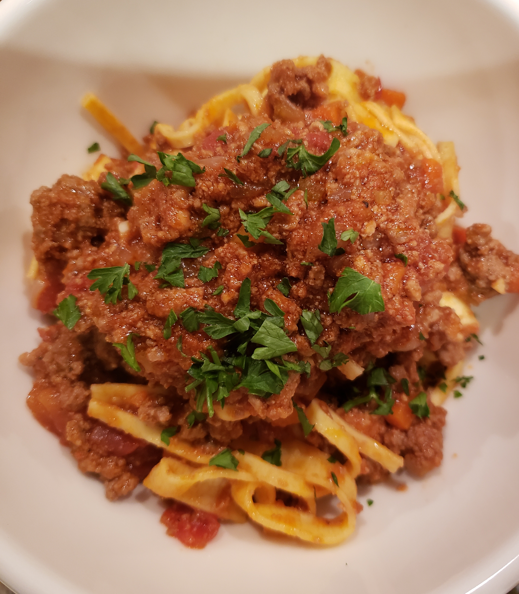

Bolognese

Description
Bolognese is a rustic and versatile dish that everyone can enjoy. There are relatively few ingredients, so let's dive right in!
I originally found this recipe online, and over the years have adjusted it to my liking. I find the cookiing method is most important.
Ingredients
- Ground beef
- Ground Pork
- Bacon
- Celery
- Onion
- Carrot
- Garlic
- Red wine
- Tomato paste
- Chicken Broth
- Butter
- Olive oil
- Salt
- Pepper
- Parmesan cheese
- Linguini noodles
- Sautee veggies and bacon until soft, and all liquid is gone
- When veggies are soft, begin to cook meat in seperate pan. Salt and Pepper
- Drain meat and combine with veggies
- Add in red wine and simmer on high until reduced
- Whisk tomato past with chicken stock and combine with veggies and meat
- Simmer on high for 15 minutes, then turn heat down to low and simmer lightly until sauce is thickened, around 2 to 3 hours
- Cook pasta noodles, adding water to sauce to reach desired consistency
- Service sauce over noodles with freshly grated Parmesan cheese
You can serve this sauce with garlic bread. Enjoy!